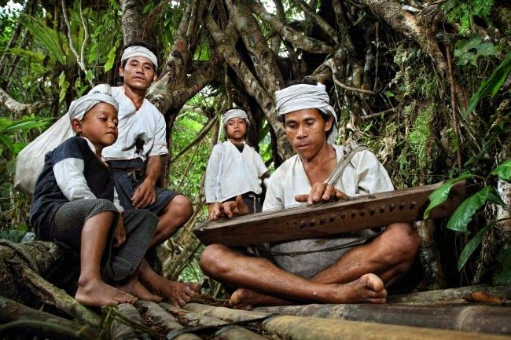
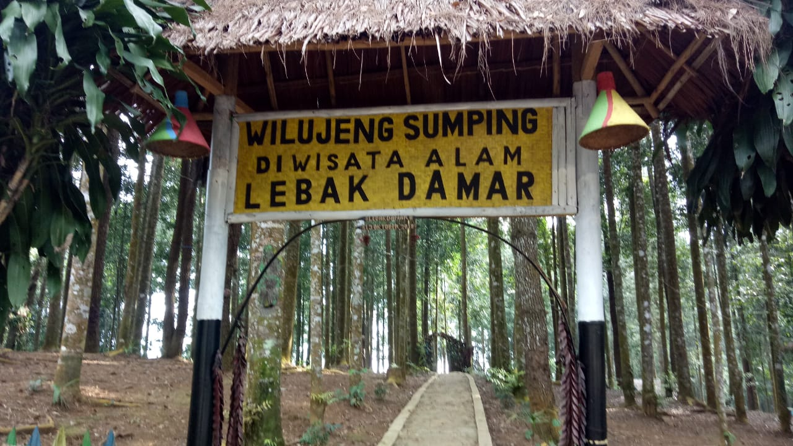
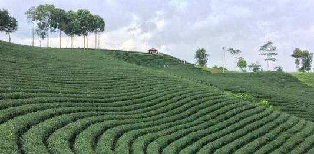

Kampung Adat Suku BaduyRating
Kampung Cikeusik, Cikertawana, dan Cibeo adalah tiga kampung tempat Suku Baduy tinggal, sedangkan kelompok masyarakat Baduy Luar tinggal di 50 kampung lainnya yang berada di bukit-bukit Gunung Kendeng. Suku baduy pada umumnya menggunakan bahasa dengan dialek sunda-banten sebagai alat komunikasi dengan masyarakat luar |

Lebak DamarLebak Damar terletak di Kawasan Wisata Terpadu Hegarmanah, berjarak sekitar 1 km dari Kebun Teh Cikuya, Kecamatan Cibeber. Sesuai namanya, Lebak Damar merupakan dataran yang dipenuhi dengan pohon damar, luas lahan hutan ini sekitar 250 hektar. |

Bentang Alam HegarmanahWisata Kebun Teh Cikuya di Cibeber Lebak Banten adalah salah satu tempat wisata yang berada di Kampung Cikuya, Desa Hegarmanah, Kecamatan Cibeber, Kabupaten Lebak, Banten, Indonesia. Wisata Kebun Teh Cikuya di Cibeber Lebak Banten adalah tempat wisata yang ramai dengan wisatawan pada hari biasa maupun hari liburan. Tempat ini sangat indah dan bisa memberikan sensasi yang berbeda dengan aktivitas kita sehari hari. |
|